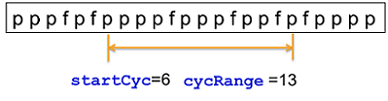

SmartRDI: Error map results from user patterns
The emap() class provides failing information in user patterns.
The
emap() class provides the following functions:| Function | Description | Mode |
|---|---|---|
| combinedFailCount() | Return the total fail counts of many pins in one pattern label. | P |
| emapLocation() | Specify a location where error maps are stored. | |
| failCount() | Return the number of failed cycles within a specified cycle range. | P |
| failCyc() | Return all failed cycles' positions within a specified cycle range. | P |
| FFC() | Return the number of the first failing cycle from a specified cycle range. | P |
| FFV() | Specify a cycle number, starting from which the cycles in range are to be checked for finding and retrieving the number of the first fail vector in pattern. | P |
| label() | Specify a label to be executed. | P |
| multiFFC() | Specify a start cycle and a number of failing cycles for retrieving a limited number of failing cycles from a certain pattern cycle. | P |
| pfMap() | Return a pass/fail map for a specified cycle range. | P |
| rdi.func().startVec() | Specify a start vector line in a user pattern. | P |
| rdi.func().stopVec() | Insert STOP in user pattern. | P |
| xMode() | Set the X-mode value for the pin that gets the error map result. | P |
| getFailCount() | Return the number of failed cycles for a specified pin. | |
| getFailCyc() | Return failing cycle positions. | |
| getFFC() | Return the number of the first failing cycle for a specified pin. | |
| getPfMap() | Return a pass/fail map for a specified pin. | |
| rdi.id().getCombinedFailCount() | Retrieve the total fail counts of many pins in just one label. | |
| rdi.id().getFFV() | Retrieve the number of the first fail vector in pattern for a specified pin. | |
| rdi.id().getMultiFFC() | Retrieve the number of failing cycles specified by multiFCC(). |
You can use them to retrieve:
- Fail count
- Fail cycle position
- Pass/fail map
- First failing cycle position
Note
- The fail count and fail position are about "compare edge" (not tester cycle). So they supports xMode directly.
- The xMode parameter for a pin must be correct, otherwise the result for the pin will not be correct.
- The parameter specified in the functions, such as startCyc and cycRange, is about user cycles (edge), not tester cycles. This setting is critical when xMode is set to be greater than 1.
- For one pin, the xMode must remain the same in different labels in burst; otherwise the results might be wrong.
To improve performance, SmartRDI uses SMC_PIN_ERROR_MAP to upload the error map result.
Example
This diagram shows an error map example.

In this example, results are:
failCount= 3failCyc= 10, 14, 17pfMap= 1,1,1,1,0,1,1,1,0,1,1,0,1FFC= 10
The cycle number starts from "0".
The following example includes all functions of the emap() class:
ON_FIRST_INVOCATION_BEGIN();
rdi.emapLocation(TA::RAM);
RDI_BEGIN();
rdi.emap("a").label("label1").pin("pA").failCount().pfMap()
.pin("pC").failCyc(5).execute();
rdi.emap("b").label("label2").pin("pB").FFC(150).execute();
RDI_END();
ON_FIRST_INVOCATION_END();
int fcount=rdi.id("a").getFailCount("pA");
ARRAY_BOOL map=rdi.id("a").getPfMap("pA");
ARRAY_LL fcPostion=rdi.id("a").getFailCyc("pC");
int ffc=rdi.id("b").getFFC();Functional changes
- Introduced in SmartRDI 2.4.0